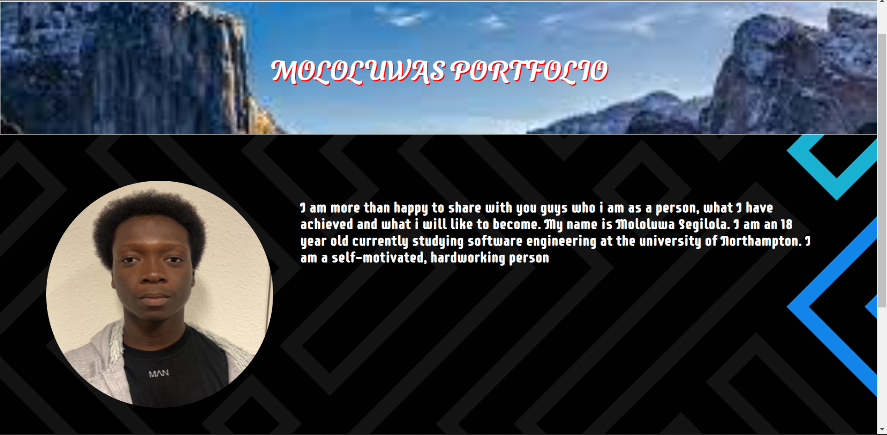
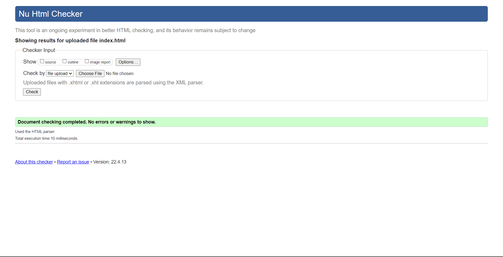

INTRODUCTION
Starting with the course, I had a background knowledge but I needed to regain most of the knowledge lost. At the beginning of the semester, it all started out easy but as time went on, It became a bit more challenging. I really started to feel the lectures when we got to the mobile section side of things. This was quite complicated as I didnt really understand what to do with the hamburger icon and how to hide the list when the hamburger is clicked. The other aspects of the lecture were very easy to understand and very fun to work with because it made me more engaged in the lecture and to want to learn more.
INDEX PAGE
This Page was the easiest out of all the pages to create. I first of all listed the layout in a grid of 4 having the header, nav, main, and footer. In the header section, I set a h2 tag for the "Mololuwas Portfolio" and set a class for it to differentiate it from the other h2 around the site. The nav bar contains the list of the links to my other pages and is styled in such a way that the content is equally spread out to the right amongst each other. I used the display: flex to set out a flexible length, the justify-content:space-between to set apart space in between themselves and a width to seperate it and make it look appropraite.
 I set a div section aside for the "Mololuwas portfolio" so that i can be able to put a background image around it which i thought will be so nice to add. I allowed the image to cover the text by adding a background-size: cover and I also set the grid-area to auto as it doesnt have the grid area of its own in the body section and then i added the text beside it
VALIDATION OF THE INDEX PAGE
 The Page initially had a few errors with the h tag saying I needed to add a class in it. I did that and the page has no more errors
PORTFOLIO PAGE
I used my Knowledge of columns